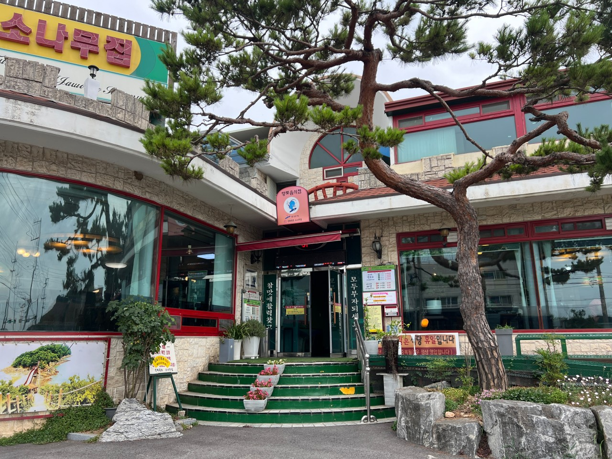

✨ 진짜원조소나무집
진짜원조소나무집은 푸르른 소나무 그늘 아래 시원하고 편안한 분위기가 인상적인 곳입니다. 오랜 전통을 지켜온 깊고 시원한 원조 바지락칼국수와 해물파전을 맛보며, 대부도에서만 느낄 수 있는 정갈하고 푸짐한 식사 경험을 할 수 있는 대표적인 맛집입니다.
주소: 경기도 안산시 단원구 대부황금로 732
운영시간: 화~금: 11:00 ~ 16:00. 토~일: 10:00 ~ 18:00. 매주 월요일 휴무
📞 032-886-2450
🍽️ 메뉴 추천
- ☝️ 바다향 칼국수
💵 대 22,000 / 중 19,000 / 소 17,000 - ✌️ 바다향 파전
💵 대(4-5인용) 40,000 / 중(3-4인용) 36,000 / 소(2-3인용) 30,000 - 👌 동동주
💵 대 10,000 / 소 7,000
🗺️ 위치 및 찾아오시는 길
주차: 식당 앞 주차 가능.
대중교통: 안산역 또는 오이도역에서 123번 시내버스 탑승 후 '신당리' 정류장에서 하차.
진짜원조소나무집은 단순한 식사를 넘어 소나무 그늘 아래서 즐기는 정겨운 휴식을 선사합니다. 시원하고 깊은 바지락칼국수 한 그릇으로 복잡한 일상을 잠시 잊어보세요! 이번 주말, 서울 근교 대부도의 명물, 진짜원조소나무집에서 속이 뻥 뚫리는 따뜻한 힐링 여행을 완성해 보는 건 어떨까요?
← 안산시 대부동동으로 돌아가기